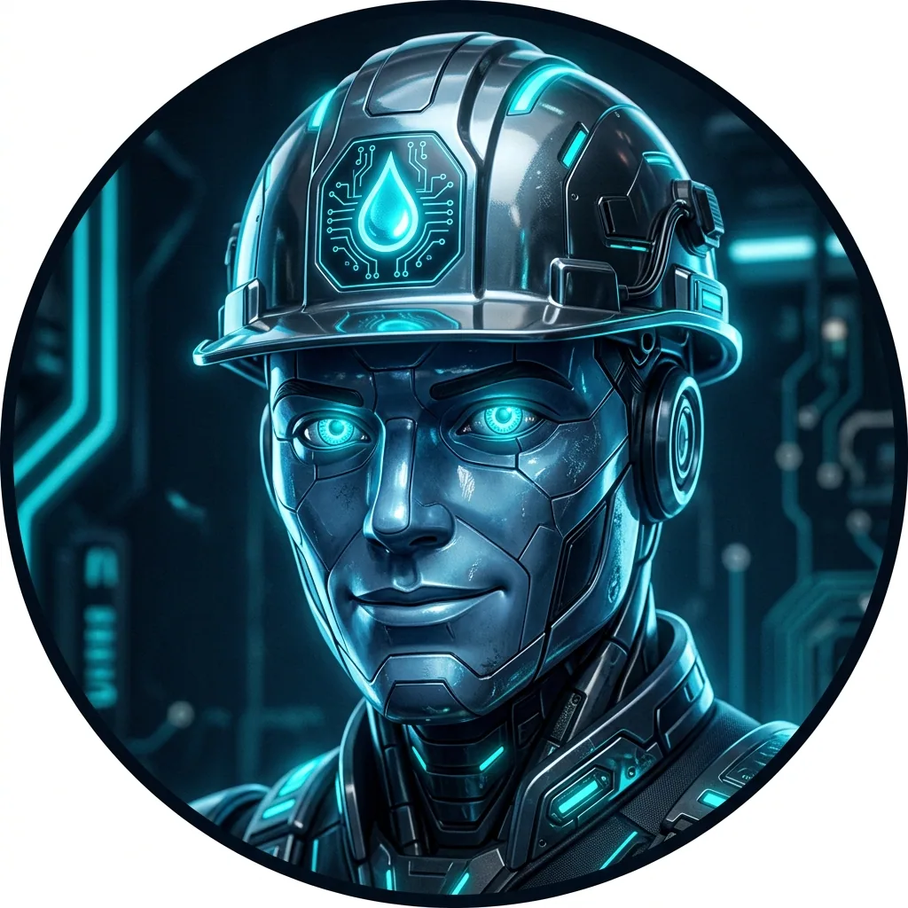

Bienvenido al ORION Fix-It Hub de Morales Plumbing.
1. DESCARGO DE RESPONSABILIDAD:
Esta plataforma proporciona un prediagnóstico visual y soporte paso a paso con fines puramente educativos e ilustrativos. Morales Plumbing no asume NINGUNA RESPONSABILIDAD legal o técnica por daños a la propiedad, lesiones personales, o diagnósticos erróneos resultantes del mal uso de esta información o de intentos de reparación de bricolaje (DIY) realizados por personas no calificadas.
2. DERECHOS DE AUTOR:
Todos los recursos gráficos, secuencias tipo cómic, la interfaz de AR y el asistente "Joe AI" son propiedad intelectual exclusiva de Morales Plumbing. Su reproducción o uso no autorizado está prohibido.
3. SOPORTE Y CONSULTA:
Si no está seguro de poder realizar una reparación de forma segura, deténgase inmediatamente y comuníquese con un profesional con licencia.
HERRAMIENTAS AR
Utilice los botones sobre el visor de la cámara para manipular la alimentación visual:
Toggle Flashlight: Aumenta el brillo para simular la linterna táctica de su dispositivo.
X-Ray View: Activa el escáner de penetración para visualizar tuberías y piezas internas ocultas.
ASISTENCIA Y EMERGENCIA
En la parte inferior de la pantalla encontrará dos botones críticos:
VOICE: Active este botón para enviar comandos de voz al asistente Joe AI.
EMERGENCY: Botón de pánico. Úselo SOLAMENTE en caso de fugas activas incontrolables para recibir el protocolo de cierre inmediato.
[LIVE FEED] SENSOR ACTIVATED
TARGET: INITIALIZING...

Joe AI - Tele-Triage
STATUS: ANALYZING CAMERA FEED...
FUENTES DE CONSULTA REALES
Ejemplos prácticos y tutoriales en video de la red: